Лабораторная работа №7 — анализ и исправление уязвимостей
Студент: u82460 | Дата: 28 мая 2026
Данные, введённые пользователем, выводились в HTML-страницы без экранирования. Это позволяло злоумышленнику внедрять вредоносный JavaScript-код.
Чем грозило: кража сессионных cookies, перенаправление на фишинговые сайты, подмена содержимого страницы.
Применена функция htmlspecialchars() ко всем данным, выводимым в HTML.
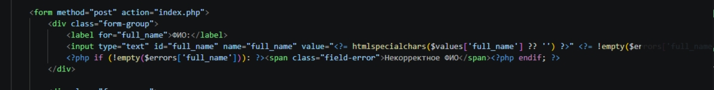
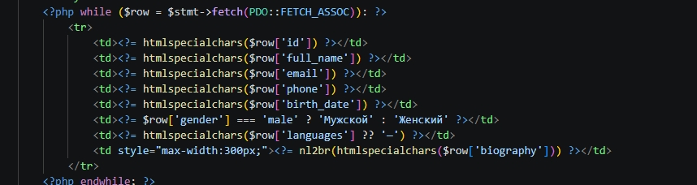
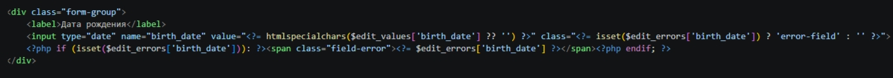
При ошибках БД выводились детали исключения (логин, хост, имя БД).
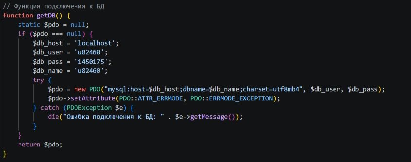
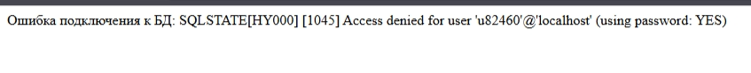
Детали ошибки отправляются в лог (error_log()), пользователь видит общее сообщение.
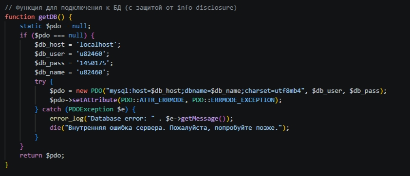
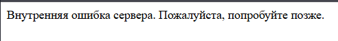
Использование конкатенации пользовательских данных в SQL-запросах.
Используются подготовленные запросы (PDO prepare/execute) во всех взаимодействиях с БД.
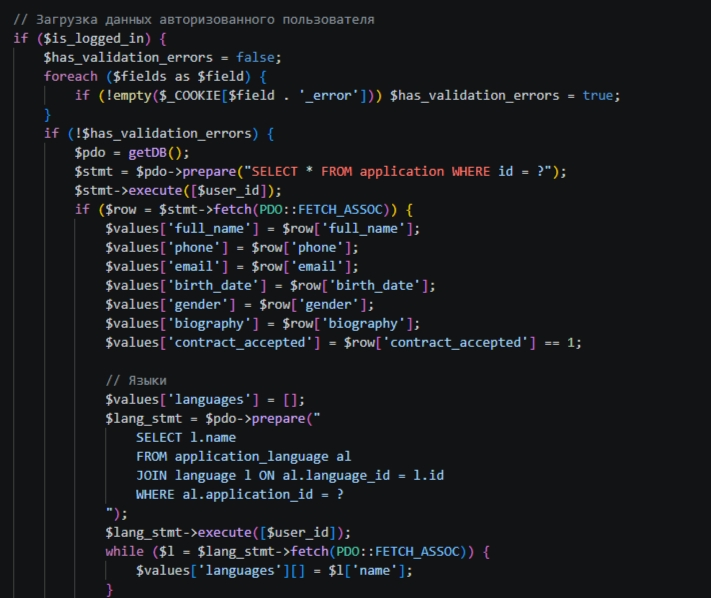
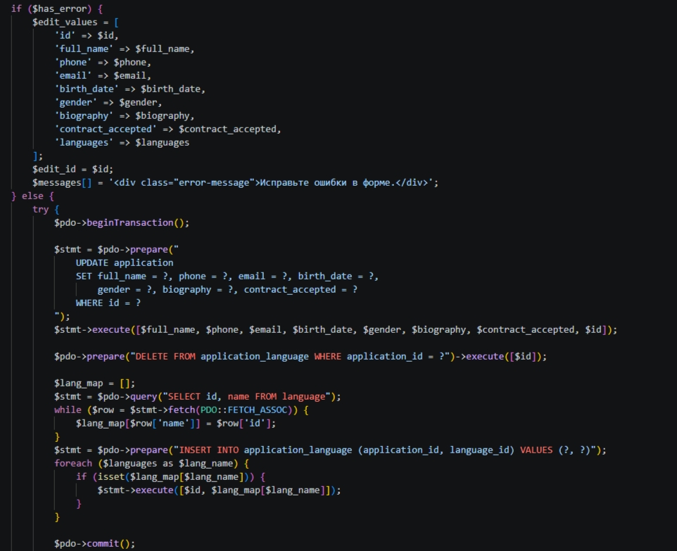
Отсутствие защиты от подделки межсайтовых запросов.
Генерация уникального токена на сессию, его передача в скрытом поле формы и проверка при POST-запросе.
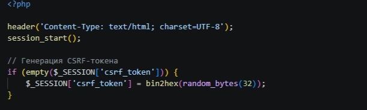
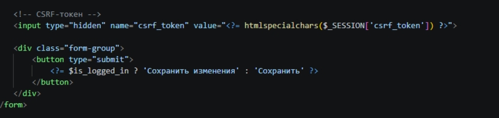
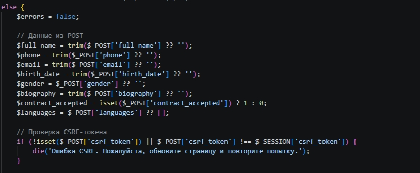
Потенциальная опасность динамического включения файлов и загрузки файлов на сервер.
1. Все include используют только фиксированные имена файлов.
2. Функционал загрузки файлов отсутствует.
3. Временные файлы (test.php, hash_gen.php) удалены.
| Уязвимость | Метод защиты |
|---|---|
| XSS | htmlspecialchars() при выводе |
| Information Disclosure | error_log() + общее сообщение |
| SQL Injection | Подготовленные запросы (PDO prepare/execute) |
| CSRF | Генерация и проверка CSRF-токенов |
| Include / Upload | Нет динамических include, нет загрузки файлов |
Вывод: Все выявленные уязвимости устранены. Приложение соответствует базовым требованиям безопасной разработки.